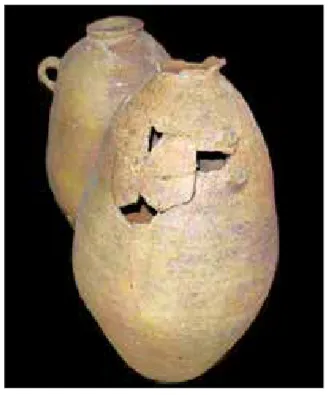

Chapter 1 · Brief overview of the history of viticulture in Portugal
History of Viticulture in Portugal
Prehistoric wine production
There is very little knowledge regarding the presence of Vitis vinifera in Iberia during the Bronze Age. Rothmaler (1941: 323), however, assumes that some grapevine material survived in Portugal from the Tertiary and has contributed to today’s vine varieties, which form part of the national heritage of both Portugal and Spain. Unfortunately, there are gaps in our knowledge on the ethnic origin of the population at that time.

As pollen and grape seed show (Hidalgo 1999: 28 refers to Stevenson), Iberians and Celts began to cultivate grapevines three thousand years ago. In the Museum of Vilafranca del Penedès, there is a prehistoric stone wine press which lends credence to this assumption.
There is no fossil evidence to determine the wine consumption of the Neolithic natives (Cardial Culture) to whose presence 5,000 dolmen and numerous menhirs bear witness. In the second millennium BC the Iberian people migrated from North Africa to the Iberian Peninsula. The first millennium BC marks the arrival of the Celts, who have been traditionally associated with wine. We are familiar with their classical “Alodrogica” and “Biturica” grapevine varieties. In Portugal the coming together of these two peoples gave rise to the Lusitanian people. In a rather nebulous way we know that around 2000 BC a very advanced people settled in Iberia. They tended to cultivated vineyards and made wine from them, which they used mainly for trade (ibid.). In the modern historical view, the people of the late Bronze Age to early Iron Age who migrated from the East Mediterranean and settled in Southern Spain on the banks of the Guadiana River are described as Tartessian. Their capital was Tartessos in the South, where in addition to trade in wine, they traded in gold products from Scandinavia to the Orient. According to the Bible (I Kings 10: 20 ff; II Chronicles, 9: 21), Israel traded with Tarshish (Tartessos =Τάρτησσος) under King Solomon’s rule. Amaral (1994) suggests that these mentions refer to the original homeland of the Tartessian people. Its silver wealth made Tartessos into a kind of Eldorado of its day. Later, the Phoenicians took over the Tartessian trade empire. Bronze wine jugs were found in the La Joya necropolis in Huelva and according to Juan Blánquez, Sebastian Celestino Pérez of the Universidad Autónoma de Madrid (2000, in Actas del I Encuentro de Historiadores de la Vitivinicultura Española), further findings are evidence of wine and wine drinking amongst the Tartessians. It is presumed that ancient copper deposits existed in the Tartessos area and were mined from the predecessors of today’s open cast mine there. Tin even came from as far afield as Cornwall in England.
In the ninth century BC, the Phoenicians established international wine trade, initially in the former Tartessia
icant trade associated with it. The historical gene pool of grapevine varieties was enriched by the new varieties the Phoenician invaders brought with them. These new varieties were either planted directly as vineyards or bred with the existing local varieties. In this regard, one can only agree with Veiga Ferreira (1993), “We should know more about where grape varieties come from (...) Perhaps we will get the answer to this question one day when our young people want to know”. J. L. Blanco Fernandez (1933, “Les naissances du vin”, L‘Histoire du vin. OIV Paris pp 31-44.) suggests viticulture occurred before the Phoenicians. Today, a complete inventory of grapevine varieties has been made by means of molecular marker techniques. What remains is for these to be systematically compared with other gene pools.
Vitis fossils (pollen) discovered in excavations at Paúl dos Patudos date back to 4580 BP, but have a low density. Grapevine pollen fossils with the highest density, of approximately 33%, were also found in Paúl dos Patudos (Alpiarça), albeit dating to 2590 BP.
The fossil find in Paúl dos Patudos may relate to the Neolithic Revolution, which was characterised by an upsurge in agriculture and animal husbandry. These occur- (Andalusia), where they originally mined silver, and then later in the Ebro Delta and Ibiza, which would seem to indicate widespread viticulture. Some receptacles were made of goat hide, others were clay amphorae, and even alabaster containers were found in Sexi (Almuñécar). Hildalgo assumes that in addition to varieties brought with them from the Orient (Negrul: 30), the Phoenicians also used autochthonous varieties, and evidence suggests the presence of Greek traders from Kios, Miletus and Corinth.
Around 450 BC, the Carthaginians took possession of the Peninsula from the Phoenicians. Almost all peoples who colonised the Iberian Peninsula knew about viticulture and the signifrences have to be seen in the context of the state of cultivation at the time; in effect this region of pine and oak forests was transformed into tilled, cultivated lands. (Leeuwarden & Jansen, 1985).
The harvesting of grapes for wine making and use as table grapes and raisins can certainly be taken for granted (Barros, 1998). The remarkable site of São Cucufate (Vidigueira) which had been settled since the fourth century BC was excavated in 1982 by Jorge de Alarcão. It was here that he found soil containing seeds and stalks. Silva (1989: 16) identified the 24 seeds found here, measuring 6.9 x 4.2 x 3.1 mm, as those of Vitis viniferaVitis vinifera.
Clear proof of their presence in Portugal is the large number of Almaraz grape seeds discovered (at Almada in Lisbon) dating back to the seventh century BC The introduction of the “Moscatel de Setúbal” (= of Alexandria) grapevine variety on the peninsula
We have the Roman Polybius (205-125 BC), to thank for the first written documents on pre-Roman viticulture in Portugal; he was amazed at the low prices of Portuguese wines (Amaral, 1994: 327)